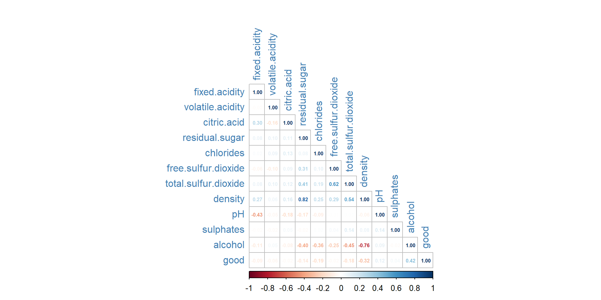

Introduction to Statistical Learning
STAT 387
Preamble
Consider the wine quality dataset from UCI Machine Learning Respository. We will focus only on the data concerning white wines (and not red wines). Dichotomize the quality variable as good, which takes the value 1 if quality ≥ 7 and the value 0, otherwise. We will take good as response and all the 11 physiochemical characteristics of the wines in the data as predictors.
Problem Statements
Use 10-fold cross-validation for estimating the test error rates below and compute the estimates using caret package with seed set to 1234 before each computation.
- Fit a KNN with K chosen optimally using test error rate. Report error rate, sensitivity, specificity, and AUC for the optimal KNN based on the training data. Also, report its estimated test error rate.
- Repeat (a) using logistic regression.
- Repeat (a) using LDA.
- Repeat (a) using QDA.
- Compare the results in (a)-(d). Which classifier would you recommend? Justify your answer.
Methodologies
- KNN
- GLM/logit/glmnet
- LDA
- QDA
- Naive Bayes
- Decision Tree
- Classification and Regression Trees (CART)
- Random Forest (Classification)
- Bagging (Bootstrap Aggregation)
- Boosting (Gradient Boosting Machine (GBM))
- eXtreme Gradient Boosting (XGBoost)
- Extremely Randomized Trees (ExtraTrees)
- SVM
- Neural Networks (NNET)
Data Description
This is a dataset of wine quality containing 4898 observations of 12 variables. The variables are:
fixed.acidity: The amount of fixed acid in the wine (\(g/dm^3\))volatile.acidity: The amount of volatile acid in the wine (\(g/dm^4\))citric.acid: The amount of citric acid in the wine (\(g/dm^3\))residual.sugar: The amount of residual sugar in the wine (\(g/dm^3\))chlorides: The amount of salt in the wine (\(g/dm^3\))free.sulfur.dioxide: The amount of free sulfur dioxide in the wine (\(mg/dm^3\))total.sulfur.dioxide: The amount of total sulfur dioxide in the wine (\(mg/dm^3\))density: The density of the wine (\(g/dm^3\))pH: The \(pH\) value of the winesulphates: The amount of sulphates in the wine (\(g/dm^3\))alcohol: The alcohol content of the wine (\(\% vol\))quality: The quality score of the wine (0-10)
After removing the duplicate rows from our data set, we are left with 3961 observations of the above 11 variables minus quality column variable, and introduced a new variable good as our response:
good: A binary variable indicating whether the wine is good (quality\(\geq\) 7) or not (quality\(<\) 7).
Exploratory Analysis
Data Import
wine.data <- read.csv("dataset\\winequality-white.csv", sep=";", header = T)
wine.data_subset <- wine.data %>%
mutate(good = ifelse(quality>=7, 1, 0)) %>%
distinct() %>%
dplyr::select(c(1:11, 13))
head(wine.data)head(wine.data_subset)Data Analysis
dim(wine.data)[1] 4898 12dim(wine.data_subset)[1] 3961 12str(wine.data)'data.frame': 4898 obs. of 12 variables:
$ fixed.acidity : num 7 6.3 8.1 7.2 7.2 8.1 6.2 7 6.3 8.1 ...
$ volatile.acidity : num 0.27 0.3 0.28 0.23 0.23 0.28 0.32 0.27 0.3 0.22 ...
$ citric.acid : num 0.36 0.34 0.4 0.32 0.32 0.4 0.16 0.36 0.34 0.43 ...
$ residual.sugar : num 20.7 1.6 6.9 8.5 8.5 6.9 7 20.7 1.6 1.5 ...
$ chlorides : num 0.045 0.049 0.05 0.058 0.058 0.05 0.045 0.045 0.049 0.044 ...
$ free.sulfur.dioxide : num 45 14 30 47 47 30 30 45 14 28 ...
$ total.sulfur.dioxide: num 170 132 97 186 186 97 136 170 132 129 ...
$ density : num 1.001 0.994 0.995 0.996 0.996 ...
$ pH : num 3 3.3 3.26 3.19 3.19 3.26 3.18 3 3.3 3.22 ...
$ sulphates : num 0.45 0.49 0.44 0.4 0.4 0.44 0.47 0.45 0.49 0.45 ...
$ alcohol : num 8.8 9.5 10.1 9.9 9.9 10.1 9.6 8.8 9.5 11 ...
$ quality : int 6 6 6 6 6 6 6 6 6 6 ...str(wine.data_subset)'data.frame': 3961 obs. of 12 variables:
$ fixed.acidity : num 7 6.3 8.1 7.2 6.2 8.1 8.1 8.6 7.9 6.6 ...
$ volatile.acidity : num 0.27 0.3 0.28 0.23 0.32 0.22 0.27 0.23 0.18 0.16 ...
$ citric.acid : num 0.36 0.34 0.4 0.32 0.16 0.43 0.41 0.4 0.37 0.4 ...
$ residual.sugar : num 20.7 1.6 6.9 8.5 7 1.5 1.45 4.2 1.2 1.5 ...
$ chlorides : num 0.045 0.049 0.05 0.058 0.045 0.044 0.033 0.035 0.04 0.044 ...
$ free.sulfur.dioxide : num 45 14 30 47 30 28 11 17 16 48 ...
$ total.sulfur.dioxide: num 170 132 97 186 136 129 63 109 75 143 ...
$ density : num 1.001 0.994 0.995 0.996 0.995 ...
$ pH : num 3 3.3 3.26 3.19 3.18 3.22 2.99 3.14 3.18 3.54 ...
$ sulphates : num 0.45 0.49 0.44 0.4 0.47 0.45 0.56 0.53 0.63 0.52 ...
$ alcohol : num 8.8 9.5 10.1 9.9 9.6 11 12 9.7 10.8 12.4 ...
$ good : num 0 0 0 0 0 0 0 0 0 1 ...summary(wine.data) fixed.acidity volatile.acidity citric.acid residual.sugar
Min. : 3.800 Min. :0.0800 Min. :0.0000 Min. : 0.600
1st Qu.: 6.300 1st Qu.:0.2100 1st Qu.:0.2700 1st Qu.: 1.700
Median : 6.800 Median :0.2600 Median :0.3200 Median : 5.200
Mean : 6.855 Mean :0.2782 Mean :0.3342 Mean : 6.391
3rd Qu.: 7.300 3rd Qu.:0.3200 3rd Qu.:0.3900 3rd Qu.: 9.900
Max. :14.200 Max. :1.1000 Max. :1.6600 Max. :65.800
chlorides free.sulfur.dioxide total.sulfur.dioxide density
Min. :0.00900 Min. : 2.00 Min. : 9.0 Min. :0.9871
1st Qu.:0.03600 1st Qu.: 23.00 1st Qu.:108.0 1st Qu.:0.9917
Median :0.04300 Median : 34.00 Median :134.0 Median :0.9937
Mean :0.04577 Mean : 35.31 Mean :138.4 Mean :0.9940
3rd Qu.:0.05000 3rd Qu.: 46.00 3rd Qu.:167.0 3rd Qu.:0.9961
Max. :0.34600 Max. :289.00 Max. :440.0 Max. :1.0390
pH sulphates alcohol quality
Min. :2.720 Min. :0.2200 Min. : 8.00 Min. :3.000
1st Qu.:3.090 1st Qu.:0.4100 1st Qu.: 9.50 1st Qu.:5.000
Median :3.180 Median :0.4700 Median :10.40 Median :6.000
Mean :3.188 Mean :0.4898 Mean :10.51 Mean :5.878
3rd Qu.:3.280 3rd Qu.:0.5500 3rd Qu.:11.40 3rd Qu.:6.000
Max. :3.820 Max. :1.0800 Max. :14.20 Max. :9.000 summary(wine.data_subset) fixed.acidity volatile.acidity citric.acid residual.sugar
Min. : 3.800 Min. :0.0800 Min. :0.0000 Min. : 0.600
1st Qu.: 6.300 1st Qu.:0.2100 1st Qu.:0.2700 1st Qu.: 1.600
Median : 6.800 Median :0.2600 Median :0.3200 Median : 4.700
Mean : 6.839 Mean :0.2805 Mean :0.3343 Mean : 5.915
3rd Qu.: 7.300 3rd Qu.:0.3300 3rd Qu.:0.3900 3rd Qu.: 8.900
Max. :14.200 Max. :1.1000 Max. :1.6600 Max. :65.800
chlorides free.sulfur.dioxide total.sulfur.dioxide density
Min. :0.00900 Min. : 2.00 Min. : 9.0 Min. :0.9871
1st Qu.:0.03500 1st Qu.: 23.00 1st Qu.:106.0 1st Qu.:0.9916
Median :0.04200 Median : 33.00 Median :133.0 Median :0.9935
Mean :0.04591 Mean : 34.89 Mean :137.2 Mean :0.9938
3rd Qu.:0.05000 3rd Qu.: 45.00 3rd Qu.:166.0 3rd Qu.:0.9957
Max. :0.34600 Max. :289.00 Max. :440.0 Max. :1.0390
pH sulphates alcohol good
Min. :2.720 Min. :0.2200 Min. : 8.00 Min. :0.0000
1st Qu.:3.090 1st Qu.:0.4100 1st Qu.: 9.50 1st Qu.:0.0000
Median :3.180 Median :0.4800 Median :10.40 Median :0.0000
Mean :3.195 Mean :0.4904 Mean :10.59 Mean :0.2083
3rd Qu.:3.290 3rd Qu.:0.5500 3rd Qu.:11.40 3rd Qu.:0.0000
Max. :3.820 Max. :1.0800 Max. :14.20 Max. :1.0000 # Check for NAs in dataset
sum(is.na(wine.data))[1] 0# Counts at each combination of response's factor levels
table(wine.data$quality)
3 4 5 6 7 8 9
20 163 1457 2198 880 175 5 Data Histograms
wine.colnames <- colnames(wine.data_subset[, 1:12])
num_plots <- length(wine.colnames)
num_rows <- ceiling(num_plots/3)
# Create an empty list to store plots
grid_arr <- list()
# Loop over each column name in the wine.colnames vector
for(i in 1:num_plots) {
# Create a ggplot object for the current column using aes
plt <- ggplot(data = wine.data_subset, aes_string(x = wine.colnames[i])) +
geom_histogram(binwidth = diff(range(wine.data_subset[[wine.colnames[i]]]))/30,
color = "black", fill = "slategray3") +
labs(x = wine.colnames[i], y = "Frequency") +
theme_bw()
# Add the current plot to the grid_arr list
grid_arr[[i]] <- plt
}
grid_arr <- do.call(gridExtra::grid.arrange, c(grid_arr, ncol = 3))
Data Relationships
reshape2::melt(wine.data[, 1:12], "quality") %>%
ggplot(aes(value, quality, color = variable)) +
geom_point() +
geom_smooth(aes(value,quality, colour=variable), method=lm, se=FALSE)+
facet_wrap(.~variable, scales = "free")
# Collinearity between Attributes
cor(wine.data_subset) %>%
corrplot::corrplot(method = 'number', type = "lower", tl.col = "steelblue", number.cex = 0.5)
# Remove quality from dataset, use good as response
wine.data_subset$quality <- NULL Data Split
set.seed(123)
# Splitting the dataset into train and test (7/10th for train remaining for test)
inTrain <- caret::createDataPartition(wine.data_subset$good, p = 7/10, list = F)
train <- wine.data_subset[inTrain,]
test <- wine.data_subset[-inTrain,]
# Convert the outcome variable to a factor with two levels
train$good <- as.factor(train$good)
test$good <- as.factor(test$good)Data Modeling
K-Nearest Neightbor
Model Construction
#--------------------#
#-----K-fold CV------#
#--------------------#
set.seed(1234)
# Define the training control object for 10-fold cross-validation
train_control <- trainControl(method = "cv", number = 10)
# Train the KNN model using 10-fold cross-validation
# tuneLength argument to specify the range of values of K to be considered for tuning
set.seed(1234)
knn_model <- train(good ~ .,
data = train,
method = "knn",
trControl = train_control)
# Save the model into .Rdata for future import
save(knn_model, file = "dataset\\knn.model_kfoldCV.Rdata")
#--------------------------#
#-----K-fold CV (Mod)------#
#--------------------------#
set.seed(1234)
train_control <- trainControl(method = "cv", number = 10)
set.seed(1234)
knn_model <- train(good ~ .,
data = train,
method = "knn",
trControl = train_control,
tuneLength = 10)
# Save the model into .Rdata for future import
save(knn_model, file = "dataset\\knn.model_kfoldCV_mod.Rdata")
#--------------------#
#----Hold-out CV-----#
#--------------------#
set.seed(1234)
train_control <- trainControl(method = "none",)
set.seed(1234)
knn_model <- train(good ~ .,
data = train,
method = "knn")
save(knn_model, file = "dataset\\knn.model_holdoutCV.Rdata")
#--------------------------#
#----Hold-out CV (Mod)-----#
#--------------------------#
set.seed(1234)
train_control <- trainControl(method = "none",)
set.seed(1234)
knn_model <- train(good ~ .,
data = train,
method = "knn",
tuneGrid = expand.grid(k=1:30))
save(knn_model, file = "dataset\\knn.model_holdoutCV_mod.Rdata")
#--------------------#
#-------LOOCV--------#
#--------------------#
set.seed(1234)
train_control <- trainControl(method = "LOOCV")
set.seed(1234)
knn_model <- train(good ~ .,
data = train,
method = "knn",
trControl = train_control)
save(knn_model, file = "dataset\\knn.model_looCV.Rdata")
#--------------------------#
#-------LOOCV (Mod)--------#
#--------------------------#
set.seed(1234)
train_control <- trainControl(method = "LOOCV")
set.seed(1234)
knn_model <- train(good ~ .,
data = train,
method = "knn",
trControl = train_control,
tuneLength = 10,
tuneGrid = expand.grid(k = 1:20))
save(knn_model, file = "dataset\\knn.model_looCV_mod.Rdata")
#--------------------#
#----Repeated CV-----#
#--------------------#
set.seed(1234)
train_control <- trainControl(method = "repeatedcv", number = 10, repeats = 5)
set.seed(1234)
knn_model <- train(good ~ .,
data = train,
method = "knn",
trControl = train_control)
save(knn_model, file = "dataset\\knn.model_repeatedCV.Rdata")
#--------------------------#
#----Repeated CV (Mod)-----#
#--------------------------#
set.seed(1234)
train_control <- trainControl(method = "repeatedcv", number = 10, repeats = 5)
kknn.grid <- expand.grid(kmax = c(3, 5, 7 ,9, 11), distance = c(1, 2, 3),
kernel = c("rectangular", "gaussian", "cos"))
set.seed(1234)
knn_model <- train(good ~ .,
data = train,
method = "kknn",
trControl = train_control,
tuneGrid = kknn.grid,
preProcess = c("center", "scale"))
save(knn_model, file = "dataset\\knn.model_repeatedCV_mod.Rdata")K-fold CV
In the 10-fold cross-validation procedure, the original dataset is split into 10 subsets of approximately equal size. The model is then trained on 9 of the subsets (the training data) and evaluated on the remaining subset (the validation data). This process is repeated 10 times, each time using a different subset as the validation set, until every subset has been used exactly once as the validation set.
The purpose of cross-validation is to estimate the performance of the model on new, unseen data by simulating the process of training and testing on multiple, independent datasets. It is typically used to assess the performance of different models or model configurations, to select hyperparameters, or to compare the performance of different algorithms.
# Import model
load("dataset\\knn.model_kfoldCV.Rdata")
# Make predictions on the test data using the trained model and calculate the test error rate
knn.predictions <- predict(knn_model, newdata = test)
confusionMatrix(knn.predictions, test$good)Confusion Matrix and Statistics
Reference
Prediction 0 1
0 903 164
1 58 63
Accuracy : 0.8131
95% CI : (0.7898, 0.8349)
No Information Rate : 0.8089
P-Value [Acc > NIR] : 0.3725
Kappa : 0.2643
Mcnemar's Test P-Value : 1.826e-12
Sensitivity : 0.9396
Specificity : 0.2775
Pos Pred Value : 0.8463
Neg Pred Value : 0.5207
Prevalence : 0.8089
Detection Rate : 0.7601
Detection Prevalence : 0.8981
Balanced Accuracy : 0.6086
'Positive' Class : 0
# Convert predictions to a numeric vector
knn.predictions <- as.numeric(knn.predictions)
# Calculate the AUC using the performance() and auc() functions:
pred_obj <- prediction(knn.predictions, test$good)
auc_val <- performance(pred_obj, "auc")@y.values[[1]]
auc_val[1] 0.6085896# Performance plot for TP and FP
roc_obj <- performance(pred_obj, "tpr", "fpr")
plot(roc_obj, colorize = TRUE, lwd = 2,
xlab = "False Positive Rate",
ylab = "True Positive Rate",
main = "ROC Curves from 10-fold CV")
points(auc_val, 1 - auc_val,
col = "steelblue",
pch = 21)
abline(a = 0, b = 1)knn.kfoldCV.ROC.plot<- recordPlot()
# Accuracy and Kappa value plot
knn.accu.kappa.plot <- function(knn.model) {
p <- ggplot(data=data.frame(k = knn.model$results$k,
Accuracy = knn.model$results$Accuracy,
Kappa = knn.model$results$Kappa)) +
geom_point(aes(x = k, y = Accuracy, color = "Accuracy")) +
geom_point(aes(x = k, y = Kappa, color = "Kappa")) +
geom_line(aes(x = k, y = Accuracy, linetype = "Accuracy", color = "Accuracy")) +
geom_line(aes(x = k, y = Kappa, linetype = "Kappa", color = "Kappa")) +
scale_color_manual(values = c("#98c379", "#e06c75"),
guide = guide_legend(override.aes = list(linetype = c(1, 0)) )) +
scale_linetype_manual(values=c("solid", "dotted"),
guide = guide_legend(override.aes = list(color = c("#98c379", "#e06c75")))) +
labs(x = "K value",
y = "Accuracy / Kappa") +
ylim(0, 1) +
theme_bw() +
theme(plot.title = element_text(hjust = 0.5)) +
guides(color = guide_legend(title = "Metric"),
linetype = guide_legend(title = "Metric"))
return(p)
}
knn.kfoldCV.plot <- knn.accu.kappa.plot(knn_model) +
geom_text(aes(x = k, y = Accuracy, label = round(Accuracy, 3)), vjust = -1) +
geom_text(aes(x = k, y = Kappa, label = round(Kappa, 3)), vjust = -1) +
ggtitle("KNN Model Performance (10-Fold CV)")Tuned
load("dataset\\knn.model_kfoldCV_mod.Rdata")
knn.predictions <- predict(knn_model, newdata = test)
confusionMatrix(knn.predictions, test$good)Confusion Matrix and Statistics
Reference
Prediction 0 1
0 935 208
1 26 19
Accuracy : 0.803
95% CI : (0.7793, 0.8253)
No Information Rate : 0.8089
P-Value [Acc > NIR] : 0.7118
Kappa : 0.0816
Mcnemar's Test P-Value : <2e-16
Sensitivity : 0.9729
Specificity : 0.0837
Pos Pred Value : 0.8180
Neg Pred Value : 0.4222
Prevalence : 0.8089
Detection Rate : 0.7870
Detection Prevalence : 0.9621
Balanced Accuracy : 0.5283
'Positive' Class : 0
knn.predictions <- as.numeric(knn.predictions)
pred_obj <- prediction(knn.predictions, test$good)
auc_val <- performance(pred_obj, "auc")@y.values[[1]]
auc_val[1] 0.5283226roc_obj <- performance(pred_obj, "tpr", "fpr")
invisible(plot(roc_obj, colorize = TRUE, lwd = 2,
xlab = "False Positive Rate",
ylab = "True Positive Rate",
main = "ROC Curves from Tuned K-fold CV"))
points(auc_val, 1 - auc_val,
col = "steelblue",
pch = 21)
abline(a = 0, b = 1)knn.kfoldCV_mod.ROC.plot <- recordPlot()
knn.kfoldCV_mod.plot <- knn.accu.kappa.plot(knn_model) +
geom_text(aes(x = k, y = Accuracy, label = round(Accuracy, 3)), vjust = -1) +
geom_text(aes(x = k, y = Kappa, label = round(Kappa, 3)), vjust = -1) +
ggtitle("KNN Model Performance (Tuned 10-Fold CV)")Hold-out CV
load("dataset\\knn.model_holdoutCV.Rdata")
knn.predictions <- predict(knn_model, newdata = test)
confusionMatrix(knn.predictions, test$good)Confusion Matrix and Statistics
Reference
Prediction 0 1
0 911 174
1 50 53
Accuracy : 0.8114
95% CI : (0.788, 0.8333)
No Information Rate : 0.8089
P-Value [Acc > NIR] : 0.4297
Kappa : 0.2293
Mcnemar's Test P-Value : <2e-16
Sensitivity : 0.9480
Specificity : 0.2335
Pos Pred Value : 0.8396
Neg Pred Value : 0.5146
Prevalence : 0.8089
Detection Rate : 0.7668
Detection Prevalence : 0.9133
Balanced Accuracy : 0.5907
'Positive' Class : 0
knn.predictions <- as.numeric(knn.predictions)
pred_obj <- prediction(knn.predictions, test$good)
auc_val <- performance(pred_obj, "auc")@y.values[[1]]
auc_val[1] 0.5907255roc_obj <- performance(pred_obj, "tpr", "fpr")
plot(roc_obj, colorize = TRUE, lwd = 2,
xlab = "False Positive Rate",
ylab = "True Positive Rate",
main = "ROC Curves from Hold-out CV")
points(auc_val, 1 - auc_val,
col = "steelblue",
pch = 21)
abline(a = 0, b = 1)knn.holdoutCV.ROC.plot <- recordPlot()
knn.holdoutCV.plot <- knn.accu.kappa.plot(knn_model) +
geom_text(aes(x = k, y = Accuracy, label = round(Accuracy, 3)), vjust = -1) +
geom_text(aes(x = k, y = Kappa, label = round(Kappa, 3)), vjust = -1) +
ggtitle("KNN Model Performance (Hold-out CV)")Tuned
load("dataset\\knn.model_holdoutCV_mod.Rdata")
knn.predictions <- predict(knn_model, newdata = test)
confusionMatrix(knn.predictions, test$good)Confusion Matrix and Statistics
Reference
Prediction 0 1
0 952 219
1 9 8
Accuracy : 0.8081
95% CI : (0.7845, 0.8301)
No Information Rate : 0.8089
P-Value [Acc > NIR] : 0.547
Kappa : 0.04
Mcnemar's Test P-Value : <2e-16
Sensitivity : 0.99063
Specificity : 0.03524
Pos Pred Value : 0.81298
Neg Pred Value : 0.47059
Prevalence : 0.80892
Detection Rate : 0.80135
Detection Prevalence : 0.98569
Balanced Accuracy : 0.51294
'Positive' Class : 0
knn.predictions <- as.numeric(knn.predictions)
pred_obj <- prediction(knn.predictions, test$good)
auc_val <- performance(pred_obj, "auc")@y.values[[1]]
auc_val[1] 0.5129385roc_obj <- performance(pred_obj, "tpr", "fpr")
plot(roc_obj, colorize = TRUE, lwd = 2,
xlab = "False Positive Rate",
ylab = "True Positive Rate",
main = "ROC Curves from Tuned Hold-out CV")
points(auc_val, 1 - auc_val,
col = "steelblue",
pch = 21)
abline(a = 0, b = 1)knn.holdoutCV_mod.ROC.plot <- recordPlot()
knn.holdoutCV_mod.plot <- knn.accu.kappa.plot(knn_model) +
geom_text(aes(x = k, y = Accuracy, label = round(Accuracy, 3)), hjust = -0.3, angle=90) +
geom_text(aes(x = k, y = Kappa, label = round(Kappa, 3)), hjust=-0.3, angle=90) +
ggtitle("KNN Model Performance (Tuned Hold-out CV)")LOOCV
load("dataset\\knn.model_looCV.Rdata")
knn.predictions <- predict(knn_model, newdata = test)
confusionMatrix(knn.predictions, test$good)Confusion Matrix and Statistics
Reference
Prediction 0 1
0 921 171
1 40 56
Accuracy : 0.8224
95% CI : (0.7994, 0.8437)
No Information Rate : 0.8089
P-Value [Acc > NIR] : 0.1258
Kappa : 0.263
Mcnemar's Test P-Value : <2e-16
Sensitivity : 0.9584
Specificity : 0.2467
Pos Pred Value : 0.8434
Neg Pred Value : 0.5833
Prevalence : 0.8089
Detection Rate : 0.7753
Detection Prevalence : 0.9192
Balanced Accuracy : 0.6025
'Positive' Class : 0
knn.predictions <- as.numeric(knn.predictions)
pred_obj <- prediction(knn.predictions, test$good)
auc_val <- performance(pred_obj, "auc")@y.values[[1]]
auc_val[1] 0.6025364roc_obj <- performance(pred_obj, "tpr", "fpr")
plot(roc_obj, colorize = TRUE, lwd = 2,
xlab = "False Positive Rate",
ylab = "True Positive Rate",
main = 'ROC Curves from LOOCV')
points(auc_val, 1 - auc_val,
col = "steelblue",
pch = 21)
abline(a = 0, b = 1)knn.looCV.ROC.plot <- recordPlot()
knn.looCV.plot <- knn.accu.kappa.plot(knn_model) +
geom_text(aes(x = k, y = Accuracy, label = round(Accuracy, 3)), vjust = -1) +
geom_text(aes(x = k, y = Kappa, label = round(Kappa, 3)), vjust = -1) +
ggtitle("KNN Model Performance (LOOCV)")Tuned
load("dataset\\knn.model_looCV_mod.Rdata")
knn.predictions <- predict(knn_model, newdata = test)
confusionMatrix(knn.predictions, test$good)Confusion Matrix and Statistics
Reference
Prediction 0 1
0 935 208
1 26 19
Accuracy : 0.803
95% CI : (0.7793, 0.8253)
No Information Rate : 0.8089
P-Value [Acc > NIR] : 0.7118
Kappa : 0.0816
Mcnemar's Test P-Value : <2e-16
Sensitivity : 0.9729
Specificity : 0.0837
Pos Pred Value : 0.8180
Neg Pred Value : 0.4222
Prevalence : 0.8089
Detection Rate : 0.7870
Detection Prevalence : 0.9621
Balanced Accuracy : 0.5283
'Positive' Class : 0
knn.predictions <- as.numeric(knn.predictions)
pred_obj <- prediction(knn.predictions, test$good)
auc_val <- performance(pred_obj, "auc")@y.values[[1]]
auc_val[1] 0.5283226roc_obj <- performance(pred_obj, "tpr", "fpr")
plot(roc_obj, colorize = TRUE, lwd = 2,
xlab = "False Positive Rate",
ylab = "True Positive Rate",
main = "ROC Curves from Tuned LOOCV")
points(auc_val, 1 - auc_val,
col = "steelblue",
pch = 21)
abline(a = 0, b = 1)knn.looCV_mod.ROC.plot <- recordPlot()
knn.looCV_mod.plot <- knn.accu.kappa.plot(knn_model) +
geom_text(aes(x = k, y = Accuracy, label = round(Accuracy, 3)), hjust = -0.3, angle=90) +
geom_text(aes(x = k, y = Kappa, label = round(Kappa, 3)), hjust = -0.3, angle=90) +
ggtitle("KNN Model Performance (Tuned LOOCV)")Repeated CV
load("dataset\\knn.model_repeatedCV.Rdata")
knn.predictions <- predict(knn_model, newdata = test)
confusionMatrix(knn.predictions, test$good)Confusion Matrix and Statistics
Reference
Prediction 0 1
0 917 83
1 44 144
Accuracy : 0.8931
95% CI : (0.8741, 0.9101)
No Information Rate : 0.8089
P-Value [Acc > NIR] : 1.966e-15
Kappa : 0.6299
Mcnemar's Test P-Value : 0.0007464
Sensitivity : 0.9542
Specificity : 0.6344
Pos Pred Value : 0.9170
Neg Pred Value : 0.7660
Prevalence : 0.8089
Detection Rate : 0.7719
Detection Prevalence : 0.8418
Balanced Accuracy : 0.7943
'Positive' Class : 0
knn.predictions <- as.numeric(knn.predictions)
pred_obj <- prediction(knn.predictions, test$good)
auc_val <- performance(pred_obj, "auc")@y.values[[1]]
auc_val[1] 0.7942878roc_obj <- performance(pred_obj, "tpr", "fpr")
plot(roc_obj, colorize = TRUE, lwd = 2,
xlab = "False Positive Rate",
ylab = "True Positive Rate",
main = "ROC Curves from Repeated CV")
points(auc_val, 1 - auc_val,
col = "steelblue",
pch = 21)
abline(a = 0, b = 1)knn.repeatedCV.ROC.plot <- recordPlot()
df <- knn_model$results
knn.repeatedCV.plot <- ggplot(data=df, aes(x = kmax, y = Accuracy)) +
geom_point(aes(color = "Accuracy")) +
geom_point(aes(color = "Kappa")) +
geom_line(aes(linetype = "Accuracy", color = "Accuracy")) +
geom_line(aes(y = Kappa, linetype = "Kappa", color = "Kappa")) +
geom_text(aes(label = round(Accuracy, 3)), vjust = -1) +
geom_text(aes(y = Kappa, label = round(Kappa, 3)), vjust = -1) +
scale_color_manual(values = c("#98c379", "#e06c75"),
guide = guide_legend(override.aes = list(linetype = c(1, 0)) )) +
scale_linetype_manual(values=c("solid", "dotted"),
guide = guide_legend(override.aes = list(color = c("#98c379", "#e06c75")))) +
labs(x = "K value",
y = "Accuracy / Kappa",
title = "KNN Model Performance (Repeated CV)") +
ylim(0, 1) +
theme_bw() +
theme(plot.title = element_text(hjust = 0.5)) +
guides(color = guide_legend(title = "Metric"),
linetype = guide_legend(title = "Metric"))Tuned
load("dataset\\knn.model_repeatedCV_mod.Rdata")
knn.predictions <- predict(knn_model, newdata = test)
confusionMatrix(knn.predictions, test$good)Confusion Matrix and Statistics
Reference
Prediction 0 1
0 921 103
1 40 124
Accuracy : 0.8796
95% CI : (0.8598, 0.8976)
No Information Rate : 0.8089
P-Value [Acc > NIR] : 3.875e-11
Kappa : 0.5645
Mcnemar's Test P-Value : 2.164e-07
Sensitivity : 0.9584
Specificity : 0.5463
Pos Pred Value : 0.8994
Neg Pred Value : 0.7561
Prevalence : 0.8089
Detection Rate : 0.7753
Detection Prevalence : 0.8620
Balanced Accuracy : 0.7523
'Positive' Class : 0
knn.predictions <- as.numeric(knn.predictions)
pred_obj <- prediction(knn.predictions, test$good)
auc_val <- performance(pred_obj, "auc")@y.values[[1]]
auc_val[1] 0.7523161roc_obj <- performance(pred_obj, "tpr", "fpr")
plot(roc_obj, colorize = TRUE, lwd = 2,
xlab = "False Positive Rate",
ylab = "True Positive Rate",
main = "ROC Curves from Tuned Repeated CV")
points(auc_val, 1 - auc_val,
col = "steelblue",
pch = 21)
abline(a = 0, b = 1)knn.repeatedCV_mod.ROC.plot <- recordPlot()
knn.repeatedCV_mod.plot <- ggplot(knn_model) +
labs(x = "K value",
y = "Accuracy",
title = "KNN Model Performance (Tuned Repeated CV)") +
theme_bw() +
theme(plot.title = element_text(hjust = 0.5)) Summary
ggarrange(knn.kfoldCV.plot,
knn.kfoldCV_mod.plot,
knn.holdoutCV.plot,
knn.holdoutCV_mod.plot,
knn.looCV.plot,
knn.looCV_mod.plot,
knn.repeatedCV.plot,
knn.repeatedCV_mod.plot,
ncol = 2, nrow = 4)
cowplot::plot_grid(knn.kfoldCV.ROC.plot, knn.kfoldCV_mod.ROC.plot,
ncol = 2, align = "hv", scale = 0.8)
cowplot::plot_grid(knn.holdoutCV.ROC.plot, knn.holdoutCV_mod.ROC.plot,
ncol = 2, align = "hv", scale = 0.8)
cowplot::plot_grid(knn.looCV.ROC.plot, knn.looCV_mod.ROC.plot,
ncol = 2, align = "hv", scale = 0.8)
cowplot::plot_grid(knn.repeatedCV.ROC.plot, knn.repeatedCV_mod.ROC.plot,
ncol = 2, align = "hv", scale = 0.8)
| Resampling Method | Error Rate | Sensitivity | Specificity | AUC |
|---|---|---|---|---|
| K-Fold CV | 0.2273 | 0.9199 | 0.1883 | 0.5541001 |
| K-Fold CV (Tuned) | 0.1995 | 0.9768 | 0.1004 | 0.5386181 |
| Hold-out CV | 0.2222 | 0.9336 | 0.1590 | 0.5463051 |
| Hold-out CV (Tuned) | 0.2022 | 0.9926 | 0.0251 | 0.5088642 |
| LOOCV | 0.1717 | 0.9642 | 0.2887 | 0.6264379 |
| LOOCV (Tuned) | 0.1995 | 0.9768 | 0.1004 | 0.5386181 |
| Repeated CV | 0.1776 | 0.9104 | 0.4728 | 0.6916177 |
| Repeated CV (Tuned) | 0.1120 | 0.9547 | 0.6234 | 0.7890601 |
Logistic Regression
Model Construction
#------------------------------------#
#----Logistic Regression (caret)-----#
#------------------------------------#
set.seed(1234)
# Define the training control object for 10-fold cross-validation
train_control <- trainControl(method = "cv", number = 10)
# Train the logistic regression model using 10-fold cross-validation
set.seed(1234)
logit_model <- train(good ~ .,
data = train,
method = "glm",
family = "binomial",
trControl = train_control)
save(logit_model, file = "dataset\\logit.model_kfoldCV.Rdata")K-fold CV (caret)
load("dataset\\logit.model_kfoldCV.Rdata")
logit.predictions <- predict(logit_model, newdata = test)
confusionMatrix(logit.predictions, test$good)Confusion Matrix and Statistics
Reference
Prediction 0 1
0 899 154
1 62 73
Accuracy : 0.8182
95% CI : (0.7951, 0.8397)
No Information Rate : 0.8089
P-Value [Acc > NIR] : 0.2201
Kappa : 0.3041
Mcnemar's Test P-Value : 5.949e-10
Sensitivity : 0.9355
Specificity : 0.3216
Pos Pred Value : 0.8538
Neg Pred Value : 0.5407
Prevalence : 0.8089
Detection Rate : 0.7567
Detection Prevalence : 0.8864
Balanced Accuracy : 0.6285
'Positive' Class : 0
logit.predictions <- as.numeric(logit.predictions)
pred_obj <- prediction(logit.predictions, test$good)
auc_val <- performance(pred_obj, "auc")@y.values[[1]]
auc_val[1] 0.6285349roc_obj <- performance(pred_obj, "tpr", "fpr")
plot(roc_obj, colorize = TRUE, lwd = 2,
xlab = "False Positive Rate",
ylab = "True Positive Rate",
main = "ROC Curves from Repeated CV")
points(auc_val, 1 - auc_val,
col = "steelblue",
pch = 21)
abline(a = 0, b = 1)logit.kfoldCV.ROC_caret.plot <- recordPlot()K-fold CV Tuned (caret)
glm.model <- glm(good ~ ., data= train,family="binomial")
glm.fit= stepAIC(glm.model, direction = 'backward')Start: AIC=2263
good ~ fixed.acidity + volatile.acidity + citric.acid + residual.sugar +
chlorides + free.sulfur.dioxide + total.sulfur.dioxide +
density + pH + sulphates + alcohol
Df Deviance AIC
- citric.acid 1 2240.1 2262.1
<none> 2239.0 2263.0
- alcohol 1 2241.3 2263.3
- total.sulfur.dioxide 1 2243.0 2265.0
- chlorides 1 2252.2 2274.2
- volatile.acidity 1 2254.3 2276.3
- sulphates 1 2256.6 2278.6
- free.sulfur.dioxide 1 2258.1 2280.1
- fixed.acidity 1 2258.6 2280.6
- density 1 2263.2 2285.2
- residual.sugar 1 2266.6 2288.6
- pH 1 2295.8 2317.8
Step: AIC=2262.05
good ~ fixed.acidity + volatile.acidity + residual.sugar + chlorides +
free.sulfur.dioxide + total.sulfur.dioxide + density + pH +
sulphates + alcohol
Df Deviance AIC
<none> 2240.1 2262.1
- alcohol 1 2242.7 2262.7
- total.sulfur.dioxide 1 2243.7 2263.7
- chlorides 1 2252.8 2272.8
- sulphates 1 2257.9 2277.9
- volatile.acidity 1 2258.4 2278.4
- free.sulfur.dioxide 1 2258.8 2278.8
- fixed.acidity 1 2261.2 2281.2
- density 1 2263.7 2283.7
- residual.sugar 1 2267.2 2287.2
- pH 1 2296.2 2316.2# Make predictions on test data and construct a confusion matrix
logit.predictions <- predict(glm.fit, newdata = test,type = "response")
logit.predictions <- factor(ifelse(logit.predictions > 0.7, 1, 0),
levels = c(0, 1))
confusionMatrix(logit.predictions, test$good)Confusion Matrix and Statistics
Reference
Prediction 0 1
0 954 207
1 7 20
Accuracy : 0.8199
95% CI : (0.7968, 0.8413)
No Information Rate : 0.8089
P-Value [Acc > NIR] : 0.1784
Kappa : 0.1218
Mcnemar's Test P-Value : <2e-16
Sensitivity : 0.99272
Specificity : 0.08811
Pos Pred Value : 0.82171
Neg Pred Value : 0.74074
Prevalence : 0.80892
Detection Rate : 0.80303
Detection Prevalence : 0.97727
Balanced Accuracy : 0.54041
'Positive' Class : 0
logit.predictions <- as.numeric(logit.predictions)
pred_obj <- prediction(logit.predictions, test$good)
auc_val <- performance(pred_obj, "auc")@y.values[[1]]
auc_val[1] 0.5404108roc_obj <- performance(pred_obj, "tpr", "fpr")
plot(roc_obj, colorize = TRUE, lwd = 2,
xlab = "False Positive Rate",
ylab = "True Positive Rate",
main = "ROC Curves from Repeated CV")
points(auc_val, 1 - auc_val,
col = "steelblue",
pch = 21)
abline(a = 0, b = 1)logit.kfoldCV_caret_tuned.ROC.plot <- recordPlot()K-fold CV (MASS)
# Set the number of folds
k <- 10
# Randomly assign each row in the data to a fold
set.seed(1234) # for reproducibility
fold_indices <- sample(rep(1:k, length.out = nrow(wine.data_subset)))
# Initialize an empty list to store the folds
folds <- vector("list", k)
# Assign each row to a fold
for (i in 1:k) {
folds[[i]] <- which(fold_indices == i)
}
#To store the error rate of each fold
error_rate <- numeric(k)
rmse <- numeric(k)
mae <- numeric(k)
# Loop through each fold
for (i in 1:10) {
# Extract the i-th fold as the testing set
test_indices <- unlist(folds[[i]])
test <- wine.data_subset[test_indices, ]
train <- wine.data_subset[-test_indices, ]
# Fit the model on the training set
logit_model <- glm(good ~ ., data = train, family = binomial)
# Make predictions on the testing set and calculate the error rate
log.pred <- predict(logit_model, newdata = test, type = "response")
predicted_classes <- as.numeric(ifelse(log.pred > 0.7, 1, 0), levels = c(0, 1))
# Compute RMSE
rmse[i] <- sqrt(mean((predicted_classes - test$good) ^ 2))
# Compute MAE
mae[i] <- mean(abs(predicted_classes - test$good))
# Compute MAE
error_rate[i] <- mean((predicted_classes> 0.7) != test$good)
}
# Print the error rates for each fold
for (i in 1:k) {
cat(paste0("Fold ", i, ": ", "OER:", error_rate[i], " RMSE:", rmse[i], " MAE:", mae[i], "\n"))
}Fold 1: OER:0.198992443324937 RMSE:0.446085690562853 MAE:0.198992443324937
Fold 2: OER:0.181818181818182 RMSE:0.426401432711221 MAE:0.181818181818182
Fold 3: OER:0.20959595959596 RMSE:0.457816513022367 MAE:0.20959595959596
Fold 4: OER:0.247474747474747 RMSE:0.497468338163091 MAE:0.247474747474747
Fold 5: OER:0.174242424242424 RMSE:0.417423554968361 MAE:0.174242424242424
Fold 6: OER:0.22979797979798 RMSE:0.479372485441102 MAE:0.22979797979798
Fold 7: OER:0.184343434343434 RMSE:0.429352342888023 MAE:0.184343434343434
Fold 8: OER:0.196969696969697 RMSE:0.443812682299297 MAE:0.196969696969697
Fold 9: OER:0.161616161616162 RMSE:0.402015126103685 MAE:0.161616161616162
Fold 10: OER:0.179292929292929 RMSE:0.423429957954004 MAE:0.179292929292929# Calculate the accuracy of the predictions on the testing set
train$good <- as.numeric(train$good)
test$good <- as.factor(test$good)
predicted_classes <- factor(ifelse(log.pred > 0.7, 1, 0), levels = c(0, 1))
confusionMatrix(predicted_classes, test$good)Confusion Matrix and Statistics
Reference
Prediction 0 1
0 318 70
1 1 7
Accuracy : 0.8207
95% CI : (0.7793, 0.8572)
No Information Rate : 0.8056
P-Value [Acc > NIR] : 0.2446
Kappa : 0.133
Mcnemar's Test P-Value : 7.023e-16
Sensitivity : 0.99687
Specificity : 0.09091
Pos Pred Value : 0.81959
Neg Pred Value : 0.87500
Prevalence : 0.80556
Detection Rate : 0.80303
Detection Prevalence : 0.97980
Balanced Accuracy : 0.54389
'Positive' Class : 0
#AUC and Performance Plot
predicted_classes <- as.numeric(predicted_classes)
pred_obj <- prediction(predicted_classes, test$good)
auc_val <- performance(pred_obj, "auc")@y.values[[1]]
log.perf <- performance(pred_obj,"tpr","fpr")
auc_val <- performance(pred_obj, "auc")@y.values[[1]]
auc_val[1] 0.5438871plot(log.perf, colorize = TRUE, lwd = 2,
xlab = "False Positive Rate",
ylab = "True Positive Rate",
main = "ROC Curves from Repeated CV")
points(auc_val, 1 - auc_val,
col = "steelblue",
pch = 21)
abline(a = 0, b = 1)logit.kfoldCV_MASS.ROC.plot <- recordPlot()Hold-out CV (MASS)
# Set the seed for reproducibility
set.seed(1234)
# Proportion of data to use for training
train_prop <- 0.7
# Split the data into training and testing sets
train_indices <- sample(seq_len(nrow(wine.data_subset)), size = round(train_prop * nrow(wine.data_subset)), replace = FALSE)
train <- wine.data_subset[train_indices, ]
test <- wine.data_subset[-train_indices, ]
# Fit the model on the training set
logit_model <- glm(good ~ ., data = train, family = binomial)
# Make predictions on the testing set and calculate the error rate
log.pred <- predict(logit_model, newdata = test, type = "response")
predicted_classes <- as.numeric(ifelse(log.pred > 0.7, 1, 0), levels = c(0, 1))
# Compute RMSE
rmse <- sqrt(mean((predicted_classes - test$good) ^ 2))
# Compute MAE
mae <- mean(abs(predicted_classes - test$good))
# Compute error rate
error_rate <- mean((predicted_classes > 0.7) != test$good)
# Calculate the accuracy of the predictions on the testing set
train$good <- as.numeric(train$good)
test$good <- as.factor(test$good)
predicted_classes <- factor(ifelse(log.pred > 0.7, 1, 0), levels = c(0, 1))
confusionMatrix(predicted_classes, test$good)Confusion Matrix and Statistics
Reference
Prediction 0 1
0 938 214
1 11 25
Accuracy : 0.8106
95% CI : (0.7871, 0.8325)
No Information Rate : 0.7988
P-Value [Acc > NIR] : 0.1643
Kappa : 0.1363
Mcnemar's Test P-Value : <2e-16
Sensitivity : 0.9884
Specificity : 0.1046
Pos Pred Value : 0.8142
Neg Pred Value : 0.6944
Prevalence : 0.7988
Detection Rate : 0.7896
Detection Prevalence : 0.9697
Balanced Accuracy : 0.5465
'Positive' Class : 0
#AUC and Performance Plot
predicted_classes <- as.numeric(predicted_classes)
pred_obj <- prediction(predicted_classes, test$good)
log.perf <- performance(pred_obj,"tpr","fpr")
auc_val <- performance(pred_obj, "auc")@y.values[[1]]
auc_val[1] 0.5465057plot(log.perf, colorize = TRUE, lwd = 2,
xlab = "False Positive Rate",
ylab = "True Positive Rate",
main = "ROC Curves from Repeated CV")
points(auc_val, 1 - auc_val,
col = "steelblue",
pch = 21)
abline(a = 0, b = 1)logit.holdoutCV_MASS.ROC.plot <- recordPlot()| Resampling Method | Error Rate | Sensitivity | Specificity | AUC |
|---|---|---|---|---|
Logistic Regression (caret) |
0.1944 | 0.9347 | 0.2929 | 0.6137776 |
Logistic Regression (caret tuned with stepAIC) |
0.1919 | 0.98946 | 0.08787 | 0.5386644 |
Logistic Regression (MASS K-fold CV) |
0.1793 | 0.99687 | 0.09091 | 0.5438871 |
Logistic Regression (MASS Hold-out CV) |
0.1894 | 0.9884 | 0.1046 | 0.5465057 |
Linear Discriminant Analysis
Model Construction
#--------------------#
#----LDA (caret)-----#
#--------------------#
set.seed(1234)
train_control <- trainControl(method = "cv", number = 10)
set.seed(1234)
lda_model <- train(good ~ .,
data = train,
method = "lda",
trControl = train_control)
save(lda_model, file = "dataset\\lda.model_kfoldCV.Rdata")
#--------------------#
#----LDA (class)-----#
#--------------------#
# Perform 10-fold cross-validation using the cv.lda() function
lda.cv <- cv.lda(good ~ ., data = train, method = "knn", k = 10)
# Get the cross-validation error rate
cv.error <- lda.cv$mserror
# Train the LDA model on the entire training set
lda.reg <- lda(good ~ ., data = train)
# Make predictions on the testing set using the trained LDA model
lda.pred <- predict(lda.reg, newdata = test)
# Calculate the accuracy of the predictions on the testing set
test.accuracy <- mean(test$good == lda.pred$class)K-fold CV(caret)
load("dataset\\lda.model_kfoldCV.Rdata")
lda.predictions <- predict(lda_model, newdata = test)
confusionMatrix(lda.predictions, test$good)Confusion Matrix and Statistics
Reference
Prediction 0 1
0 881 160
1 68 79
Accuracy : 0.8081
95% CI : (0.7845, 0.8301)
No Information Rate : 0.7988
P-Value [Acc > NIR] : 0.2246
Kappa : 0.3024
Mcnemar's Test P-Value : 1.674e-09
Sensitivity : 0.9283
Specificity : 0.3305
Pos Pred Value : 0.8463
Neg Pred Value : 0.5374
Prevalence : 0.7988
Detection Rate : 0.7416
Detection Prevalence : 0.8763
Balanced Accuracy : 0.6294
'Positive' Class : 0
lda.predictions <- as.numeric(lda.predictions)
pred_obj <- prediction(lda.predictions, test$good)
auc_val <- performance(pred_obj, "auc")@y.values[[1]]
auc_val[1] 0.6294448roc_obj <- performance(pred_obj, "tpr", "fpr")
plot(roc_obj, colorize = TRUE, lwd = 2,
xlab = "False Positive Rate",
ylab = "True Positive Rate",
main = "ROC Curves from Repeated CV")
points(auc_val, 1 - auc_val,
col = "steelblue",
pch = 21)
abline(a = 0, b = 1)lda.kfoldCV_caret.ROC.plot <- recordPlot()K-fold CV (MASS)
# Set the number of folds
k <- 10
# Randomly assign each row in the data to a fold
set.seed(1234) # for reproducibility
fold_indices <- sample(rep(1:k, length.out = nrow(wine.data_subset)))
# Initialize an empty list to store the folds
folds <- vector("list", k)
# Assign each row to a fold
for (i in 1:k) {
folds[[i]] <- which(fold_indices == i)
}
#To store the error rate of each fold
error_rate <- numeric(k)
rmse <- numeric(k)
mae <- numeric(k)
# Loop through each fold
for (i in 1:10) {
# Extract the i-th fold as the testing set
test_indices <- unlist(folds[[i]])
test <- wine.data_subset[test_indices, ]
train <- wine.data_subset[-test_indices, ]
# Fit the model on the training set
lda_model <- lda(good ~ ., data = train, family = binomial)
# Make predictions on the testing set and calculate the error rate
lda.pred <- predict(lda_model, newdata = test, type = "response")
predicted_classes <- as.numeric(ifelse(lda.pred$posterior[,2] > 0.7, 1, 0))
# Compute RMSE
rmse[i] <- sqrt(mean((predicted_classes - as.numeric(test$good)) ^ 2))
# Compute MAE
mae[i] <- mean(abs(predicted_classes - as.numeric(test$good)))
# Compute OER
error_rate[i] <- mean((predicted_classes > 0.7) != as.numeric(test$good))
}
# Print the error rates for each fold
for (i in 1:k) {
cat(paste0("Fold ", i, ": ", "OER:", error_rate[i], " RMSE:", rmse[i], " MAE:", mae[i], "\n"))
}Fold 1: OER:0.193954659949622 RMSE:0.440402838262451 MAE:0.193954659949622
Fold 2: OER:0.174242424242424 RMSE:0.417423554968361 MAE:0.174242424242424
Fold 3: OER:0.202020202020202 RMSE:0.449466574975495 MAE:0.202020202020202
Fold 4: OER:0.23989898989899 RMSE:0.489794844704382 MAE:0.23989898989899
Fold 5: OER:0.176767676767677 RMSE:0.420437482591261 MAE:0.176767676767677
Fold 6: OER:0.222222222222222 RMSE:0.471404520791032 MAE:0.222222222222222
Fold 7: OER:0.184343434343434 RMSE:0.429352342888023 MAE:0.184343434343434
Fold 8: OER:0.194444444444444 RMSE:0.440958551844098 MAE:0.194444444444444
Fold 9: OER:0.159090909090909 RMSE:0.398862017608733 MAE:0.159090909090909
Fold 10: OER:0.179292929292929 RMSE:0.423429957954004 MAE:0.179292929292929# Calculate the accuracy of the predictions on the testing set
train$good <- as.numeric(train$good)
test$good <- as.factor(test$good)
predicted_classes <- as.factor(predicted_classes)
confusionMatrix(predicted_classes, test$good)Confusion Matrix and Statistics
Reference
Prediction 0 1
0 317 69
1 2 8
Accuracy : 0.8207
95% CI : (0.7793, 0.8572)
No Information Rate : 0.8056
P-Value [Acc > NIR] : 0.2446
Kappa : 0.1457
Mcnemar's Test P-Value : 4.773e-15
Sensitivity : 0.9937
Specificity : 0.1039
Pos Pred Value : 0.8212
Neg Pred Value : 0.8000
Prevalence : 0.8056
Detection Rate : 0.8005
Detection Prevalence : 0.9747
Balanced Accuracy : 0.5488
'Positive' Class : 0
#AUC and Performance Plot
predicted_classes <- as.numeric(predicted_classes)
pred_obj <- prediction(predicted_classes, test$good)
lda.perf <- performance(pred_obj,"tpr","fpr")
auc_val <- performance(pred_obj, "auc")@y.values[[1]]
auc_val[1] 0.5488133plot(lda.perf, colorize = TRUE, lwd = 2,
xlab = "False Positive Rate",
ylab = "True Positive Rate",
main = "ROC Curves from Repeated CV")
points(auc_val, 1 - auc_val,
col = "steelblue",
pch = 21)
abline(a = 0, b = 1)lda.kfoldCV_MASS.ROC.plot <- recordPlot()K-fold CV (class)
| Resampling Method | Error Rate | Sensitivity | Specificity | AUC |
|---|---|---|---|---|
LDA (caret) |
0.1919 | 0.9283 | 0.3305 | 0.6294448 |
LDA (MASS) |
0.1793 | 0.9937 | 0.1039 | 0.5488133 |
LDA (class) |
0.xxxx | 0.xxxx | 0.xxxx | 0.xxxxxxx |
Quadratic discriminant analysis
Model Construction
#---------------------#
#----QDAI (caret)-----#
#---------------------#
set.seed(1234)
train_control <- trainControl(method = "cv", number = 10)
set.seed(1234)
qda_model <- train(good ~ .,
data = train,
method = "qda",
trControl = train_control)
save(qda_model, file = "dataset\\qda.model_kfoldCV.Rdata")
#--------------------#
#----QDA (class)-----#
#--------------------#K-fold CV (caret)
load("dataset\\qda.model_kfoldCV.Rdata")
qda.predictions <- predict(qda_model, newdata = test)
confusionMatrix(qda.predictions, test$good)Confusion Matrix and Statistics
Reference
Prediction 0 1
0 247 23
1 72 54
Accuracy : 0.7601
95% CI : (0.7149, 0.8013)
No Information Rate : 0.8056
P-Value [Acc > NIR] : 0.9892
Kappa : 0.3831
Mcnemar's Test P-Value : 8.449e-07
Sensitivity : 0.7743
Specificity : 0.7013
Pos Pred Value : 0.9148
Neg Pred Value : 0.4286
Prevalence : 0.8056
Detection Rate : 0.6237
Detection Prevalence : 0.6818
Balanced Accuracy : 0.7378
'Positive' Class : 0
qda.predictions <- as.numeric(qda.predictions)
pred_obj <- prediction(qda.predictions, test$good)
auc_val <- performance(pred_obj, "auc")@y.values[[1]]
auc_val[1] 0.7377967roc_obj <- performance(pred_obj, "tpr", "fpr")
plot(roc_obj, colorize = TRUE, lwd = 2,
xlab = "False Positive Rate",
ylab = "True Positive Rate",
main = "ROC Curves from Repeated CV")
points(auc_val, 1 - auc_val,
col = "steelblue",
pch = 21)
abline(a = 0, b = 1)qda.kfoldCV_caret.ROC.plot <- recordPlot()K-fold CV (MASS)
# Set the number of folds
k <- 10
# Randomly assign each row in the data to a fold
set.seed(1234) # for reproducibility
fold_indices <- sample(rep(1:k, length.out = nrow(wine.data_subset)))
# Initialize an empty list to store the folds
folds <- vector("list", k)
# Assign each row to a fold
for (i in 1:k) {
folds[[i]] <- which(fold_indices == i)
}
#To store the error rate of each fold
error_rate <- numeric(k)
rmse <- numeric(k)
mae <- numeric(k)
# Loop through each fold
for (i in 1:10) {
# Extract the i-th fold as the testing set
test_indices <- unlist(folds[[i]])
test <- wine.data_subset[test_indices, ]
train <- wine.data_subset[-test_indices, ]
# Fit the model on the training set
qda_model <- qda(good ~ ., data = train, family = binomial)
# Make predictions on the testing set and calculate the error rate
qda.pred <- predict(qda_model, newdata = test, type = "response")
predicted_classes <- as.numeric(ifelse(qda.pred$posterior[,2] > 0.7, 1, 0))
# Compute RMSE
rmse[i] <- sqrt(mean((predicted_classes - as.numeric(test$good)) ^ 2))
# Compute MAE
mae[i] <- mean(abs(predicted_classes - as.numeric(test$good)))
# Compute OER
error_rate[i] <- mean((predicted_classes > 0.7) != as.numeric(test$good))
}
# Print the error rates for each fold
for (i in 1:k) {
cat(paste0("Fold ", i, ": ", "OER:", error_rate[i], " RMSE:", rmse[i], " MAE:", mae[i], "\n"))
}Fold 1: OER:0.19647355163728 RMSE:0.443253371828438 MAE:0.19647355163728
Fold 2: OER:0.171717171717172 RMSE:0.414387707005374 MAE:0.171717171717172
Fold 3: OER:0.232323232323232 RMSE:0.481999203654147 MAE:0.232323232323232
Fold 4: OER:0.212121212121212 RMSE:0.460566186471838 MAE:0.212121212121212
Fold 5: OER:0.20959595959596 RMSE:0.457816513022367 MAE:0.20959595959596
Fold 6: OER:0.222222222222222 RMSE:0.471404520791032 MAE:0.222222222222222
Fold 7: OER:0.194444444444444 RMSE:0.440958551844098 MAE:0.194444444444444
Fold 8: OER:0.207070707070707 RMSE:0.455050224778218 MAE:0.207070707070707
Fold 9: OER:0.174242424242424 RMSE:0.417423554968361 MAE:0.174242424242424
Fold 10: OER:0.169191919191919 RMSE:0.411329453348431 MAE:0.169191919191919# Calculate the accuracy of the predictions on the testing set
train$good <- as.numeric(train$good)
test$good <- as.factor(test$good)
predicted_classes <- as.factor(predicted_classes)
confusionMatrix(predicted_classes, test$good)Confusion Matrix and Statistics
Reference
Prediction 0 1
0 285 33
1 34 44
Accuracy : 0.8308
95% CI : (0.7902, 0.8664)
No Information Rate : 0.8056
P-Value [Acc > NIR] : 0.1126
Kappa : 0.4626
Mcnemar's Test P-Value : 1.0000
Sensitivity : 0.8934
Specificity : 0.5714
Pos Pred Value : 0.8962
Neg Pred Value : 0.5641
Prevalence : 0.8056
Detection Rate : 0.7197
Detection Prevalence : 0.8030
Balanced Accuracy : 0.7324
'Positive' Class : 0
#AUC and Performance Plot
predicted_classes <- as.numeric(predicted_classes)
pred_obj <- prediction(predicted_classes, test$good)
auc_val <- performance(pred_obj, "auc")@y.values[[1]]
qda.perf <- performance(pred_obj,"tpr","fpr")
auc_val[1] 0.7324227plot(qda.perf, colorize = TRUE, lwd = 2,
xlab = "False Positive Rate",
ylab = "True Positive Rate",
main = "ROC Curves from Repeated CV")
points(auc_val, 1 - auc_val,
col = "steelblue",
pch = 21)
abline(a = 0, b = 1)qda.kfoldCV_MASS.ROC.plot <- recordPlot()K-fold CV (class)
| Resampling Method | Error Rate | Sensitivity | Specificity | AUC |
|---|---|---|---|---|
QDA (caret) |
0.2559 | 0.7418 | 0.7531 | 0.7474858 |
QDA (MASS) |
0.1692 | 0.8934 | 0.5714 | 0.7324227 |
QDA (class) |
0.xxxx | 0.xxxx | 0.xxxx | 0.xxxxxxx |
Summary
cowplot::plot_grid(knn.kfoldCV.ROC.plot,
logit.kfoldCV_MASS.ROC.plot,
lda.kfoldCV_MASS.ROC.plot,
qda.kfoldCV_MASS.ROC.plot,
ncol = 2, align = "hv", scale = 0.8)
| Resampling Method | Error Rate | Sensitivity | Specificity | AUC |
|---|---|---|---|---|
QDA (caret) |
0.2559 | 0.7418 | 0.7531 | 0.7474858 |
QDA (MASS) |
0.1692 | 0.8934 | 0.5714 | 0.7324227 |
QDA (class) |
0.0000 | 0.0000 | 0.0000 | 0.0000000 |